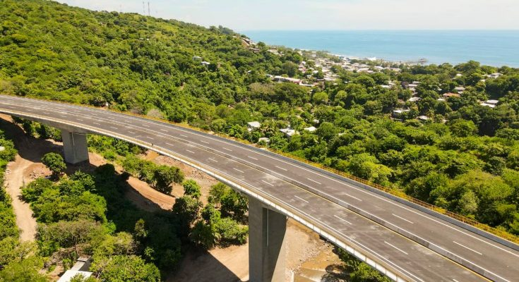
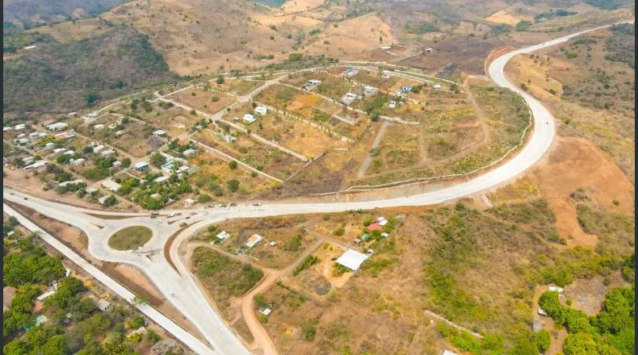

Bypass del Puerto de La Libertad


"El Segmento I tiene una longitud de 2.89 kilómetros que van desde el sector conocido como La Danta hasta las cercanías del Río Chilama. El Segmento II consiste en un viaducto que tiene una longitud de 380 metros. Actualmente, es la estructura más alta de este tipo en el país, ya que tiene 45 metros de altura"; indicó el MOP.